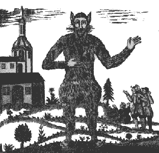
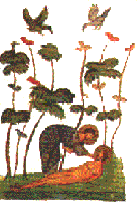
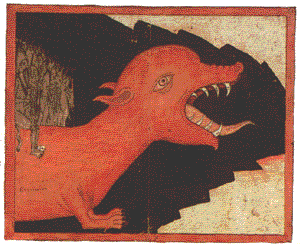
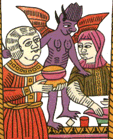

|
 | СУСАНИНЪ SOSЪПОЗДРАВЛЯЕМ ЗАБЛУДИВШИХСЯ В СЕТЯХ ИНТЕРНЕТА!
|
|
$НЕПРОДАЖНЫЙ НОНКОНФОРМИЗМ$ В музее Нонконформистского искусства все лето провисела выставка-продажа нонконформизма. К сожалению, в связи с понижением котировок фьючерсов на фондовых биржах по кредитным ставкам эмитентов "Левиз" и "Балтика-крепкое", большую часть товара сбыть не удалось. Тем не менее, наиболее продажными оказались живописцы: Цвиркунова, Тыкоцкий, Аслан, Никофоров. В программе Товарищества "Свободная Культура" на 2003-2005г.г. назван фактор торможения экономического роста: "неблагоприятная среда для отечественного и иностранного инвестора". Изменить ситуацию и удвоить ВВПутинской,10 предлагается за счет переноса фискальной тяжести на добывающие отрасли. Соня Мармеладова КУРИЦИН О КУРЕХИНЕ В раздаваемых на улицах буклетах, агитирующих за посланного нам свыше губернатора Валентину Матвиенко говорится: "С 1972 года - на комсомольской работе. Понимала и ценила петербургскую культуру, поддерживала атмосферу поиска и дерзания. Дружила с Давидом Голощекиным и Сергеем Курехиным, во многом благодаря ее заботе и поддержке возникли ленинградская филармония джаза, театр "Зазеркалье", балет Бориса Эйфмана. Перечень можно было бы продолжить". Мы продолжим этот перечень. Не расставшиеся с комсомольским задором публицисты - Вячеслав Курицин и Юлия Беломлинская, бескорыстно проводящие предвыборную пиар-компанию этой пламенной поборницы андеграунда, забыли указать, что Сергей Курехин увел Валентину Ивановну от Бориса Гребенщикова, а также, о ее многолетней дружбе с Миком Джаггером и упорной борьбе за свободу сексуальных меньшинств и марихуанокурения. Главвред. ФРАЗА МЕСЯЦА Актуалисты, организовавшие в Москве выставку "Осторожно, религия!", разгромленную верующими, воодушевленные успехом, продолжают свою пиар-компанию. Они обратились в союз журналистов с требованием покарать тех, кто одобрил погром и назвал их "пидорасами" - один из них, куратор калининградского ГЦСИ, Д. Булатов заявил на страницах "Коммерсанта": "Современный художник - очень тонкое понятие. Он может не уметь рисовать, это необязательно. И каждый, кто ему мешает, должен быть наказан". С.Нечистосилов ГОСУДАРСТВЕННЫЙ ЦЕНТР СОВРЕМЕННОЙ ИНКВИЗИЦИИ В Съ (№8) мы уже вспоминали об издевательской акции группы "Коллективные действия", которые, вывезя любителей искусства на перформанс в Подмосковье, бросили их в чистом заснеженном поле и уехали. Гораздо более изуверской акцией заявил о себе новый Петербургский ГЦСИ. Засевшие там акционисты широко разрекламировали открытие филиала своего филиала в Кронштадте, который должен сопровождаться автобусной прогулкой, экскурсией, выставками и фуршетом. В назначенный день у ГЦСИ на халяву собралась такая толпа из деятелей культуры, что все не уместились в два раздолбанных "Икаруса". Как бы уступая места, сотрудники центра смылись. Пол часа публику выдерживали в раскаленных автобусах, после чего еще полтора часа в духоте везли через пробки к Кронштадту. Однако в город автобусы не въехали, а высадили всех в промзоне и, как баранов, завели в металлический загон. Тут ошалевших любителей искусств со всех сторон обступили два десятка людей в камуфляже, с собаками и начали обыскивать. Художественная интеллигенция покорно им отдалась, после чего опять была загнана в автобусы и отвезена к памятнику Петру I. У монумента насадителю современного искусства в России публика, начала требовать показать ей работников ГЦСИ, готовя им суд Линча. Тогда их подвели к поросшему бурьяном котловану, где все с изумлением увидели весело прогуливающегося зам. Министра Культуры г-на Л.Бажанова. За ним они понуро плелись по каким-то горам и заброшенным садам, пока не добрели до полуразрушенной хибары, оказавшейся "Филиалом ГЦСИ". Здесь несчастных ждала глумливая "выставка", созданная отечественными и специально приглашенными зарубежными мастерами "актуального искусства", которой устыдились бы даже авторы мусорных инсталляций в сквотах 1980-х. А именно: связанные между собой пустые пластиковые бутылки, плавающие в воде куски пенопласта, деревянный ящик с мигающей внутри лампочкой, пара мутных мониторов без изображения и разбросанные по полу листы бумаги. Представители городской администрации и арт-садисты принялись брататься и говорить торжественные речи, после чего начался "фуршет", в меню которого значились: ящик теплого пива "Балтика-3", две тарелки бутербродов и сырые сосиски. Обессилившие жертвы повалились на землю и тупо жевали, пока злодеи еще долго ликовали и обменивались памятными подарками. Зверский-Апетитов ВОЗВРАЩАЯСЬ К 300-ЛЕТИЮ Ровно 50 лет назад, в честь 250-летия Санкт-Петербурга умер Иосиф Виссарионович Сталин. Кремль салютовал главным калибром. Так что отмечать пришлось в пятьдесят седьмом. С.В.Лаврентий ИКОНА-УБИЙЦА Благодаря произведениям Мериме, Пушкина, Гоголя, Уальда и др. нам известны статуи и картины-убийцы. Недавно усилиями научных сотрудников Гос. Эрмитажа в залах музея впервые в истории науки была выявлена икона-убийца. Эта древняя икона с изображением Христа обладает энергетическим полем, убившим нескольких музейных смотрительниц, прежде чем ее сняли с экспозиции и отправили в запасники. По заявлению официального представителя музея Бориса Сапунова и эрмитажного медика Вячеслава Грачева энергия данной иконы заставляет человеческий мозг вибрировать на большой частоте, которую не всякий может выдержать. А.Эполетов  |
ЧРЕВО ЭРМИТАЖА В то время, как Русский музей загоняет своих посетителей алчущих не только духовной пищи в жалкий буфетишко, ютящийся в подвале, Эрмитаж борется за повышение культуры обслуживания: в здании Главного Штаба по проекту архитекторов Шмонькина, Ширинкина и Негодяева построен шикарный ресторан. В его залах звучит музыка радио "Эрмитаж", DJ Пиотровский. Гурман Канибалян ДОСТИЖЕНИЯ На международной книжной ярмарке "Невский Книжный форум" книга-альбом "Арефьевский квадрат" из серии "Авангард на Неве" стал победителем в двух главных номинациях. Во-первых, гран-при - "Серебреная литера", а так же, как "Лучшая книга по искусству". "Съ" поздравляет коллектив исследователей и издателей! ЭЛЕМЕНТАРНО, ВАТСОН! Будь осторожен, следи за собой, - пророчески напутствовал В.Цой. Но гораздо приятнее следить за другими или заниматься эксгибиционизмом. Быть под наблюдением чего-то большего - вот инфантильная сладость TV и СМИ. Московский алхимик Евгений Головин назвал нашу эпоху Эпохой Шерлока Холмса. Действительно, весь ХХв. властью в мире заправляли спецслужбы (КГБ, Гестапо, Штази, ЦРУ, Мосад, М-8 и т.д.), главами государств становились агенты и шпионы, политика крутилась вокруг глобальных заговоров, литература и кино свелись к детективам о бандитах, полицейских и разведчиках. Ранее считавшееся постыдным подглядывание, обыски и слежка стали нормой жизни. Наш спецкор, побывавший в Лондоне, обнаружил спрятанные повсюду в городе камеры, через которые, используя специальные компьютерные программы, спецслужбы сличают лица прохожих с лицами разыскиваемых. Тех, кого нужно контролировать, окольцовывают обручами, скрытыми под одеждой и сигналящими о местонахождении "объекта". На капоты автомобилей полиция помещает номера своих телефонов, с просьбой сообщить о хозяине машины за приличное вознаграждений, в случае если вы заметили его правонарушение. Известны случаи, когда хозяева намеренно подпаивали своих гостей, чтобы после отъезда донести на них за 500?. Поощряется стукачество детей на родителей. Гораздо раньше, чем в России, с избытком вкусившей эти прелести в еще 1930-е, по Западу прокатились передачи типа "Биг бразер" или "Слабое звено", где сутью происходящего является подглядывание и подличанье из-за денег. Последним проектом ЦРУ стала программа распознавания человека по походке. Все TV "новости" сводятся к стрессовой информации, крови, смерти и подразумевают необходимость жесткого властного контроля. Последствия этих умонастроений нам известны, так что не "опен йор майнд", а "фильтруй базар, секи поляну". у¦%ч,¤-7(ABDGIJMN???E???O???Oч, ИЗВРАЩЕНИЯ МИРА ИСКУССТВА Еще в советское время финские туристы прославились тем, что приезжали в наш город с одной целью - хорошенько напиться. В наши дни эта славная традиция продолжается на высококультурном уровне. Так, в Румянцевском дворце под видом открытия выставки, названной "Возвращение Мiръ Искусства", нашими северными соседями была организована грандиозная попойка, в которой участвовали сборные команды Финляндии и СПб. Чтобы попасть на экспозицию, надо было протиснуться через гигантскую пьющую и жрущую толпу, запрудившую два дворцовых двора, превращенных в большую столовку. Большинство участников оргии и не подозревали о выставке, вход на которую располагался в самом дальнем углу, рядом с туалетами. Далее надо было подняться на чердак, где в маленьких душных комнатенках теснились "произведения". Выставка представляла из себя среднестатистическую экспозицию современного искусства: в меру вульгарный хлам. Тем не менее, даже пиликающие и пукающие "иконы" О.Янушевского во время открытия были освящены батюшкой, как говорят злые языки, придерживающимся нетрадиционной ориентации. Пожалуй, выделялась только большая "Стальная залупа" группы "Речники", которая время от времени с шипением открывалась и плевалась в посетителей мутной жидкостью. Приходится признать, что мир в искусство пока не вернулся, обошлось не без жертв: у В.Кацубы "подрезали" 100 евро, у О.Флоренской - сумку, а многие деятели культуры потеряли человеческий облик. Эстеты "серебряного века" в эту ночь не раз перевернулись в своих гробах. Галя Колено ХОРШО БЫТЬ КОШКОЮ, А ЕЩЕ СОБАКОЮ У группы художников "Речники" пес по имени Кот. У профессора НАИИ Андрея Медведева черный кот Мышкин (+). У кибер-матер-теоретика А.Митрофановой рыжий кот Тутмос. У знаменитой писательницы-анималистки Е.Андреевой кошки - Мура, Пеструша и Персик. У Люциана и Тани страшные собаки Астра и Батар. У менуса с Леной эрдель Муся. У Ксюши Астафьевой попугайчики. У А.Николаевой и С.Рокамболя кот Мерлин. У Б.Матвеевой кошка Уза. У Меланьи кошка Узи. У С. и Ф.Козак кот Нюша и собака Чарли. У О.Тобрелутс и А.Хааса собаки-левретки Ума и Абба. У В.Бувид лабрадор Ума. У В.Кацубы фр.бульдог Жульен. В Фиш-Фабрик кошка Фиша. У Коти Васина кошка Джуди. У М.Алексеевой и Б.Козакова сторожевой пес Доктор, черепаха Штирлиц, белка Толик (+). У фотографа С.Свешникова лошадь Мила и собаки Банзай и Берта. У Гермеса кошка Люся. У Ю.Котельникова покемон Миу. У М.Хлобыстиной кот Тимофей. У художников П.и И.Корзухиных кошка Фенимора. У искусствоведа Е.Филипс кошки Баракуда и Сеня. У художника А.Попова и искусствоведа Е.Кусакиной - канарейка Моцарт. У Е. и С.Островых кролик Цветочек и рыбки. У О.Маслова рыбки. У Г.Баранова и Т.Ледневой собака Сила (+). Продолжение следует |
|
ГОРЕ ОТУМАН Как-то раз, Гера Малышев и Циркуль решили отправиться на о.Валаам на богомолье. Но из-за многодневного тумана навигация на Ладоге была отменена. Тогда художники решили разогнать туман с помощью магии, для чего съездили в Осиновую Рощу и набрали там мешок грибов. Ночью, друзья, находившиеся в возвышенном состоянии, направились к памятнику Грибоедову, намереваясь возложить к нему грибной букет. Циркуль, первый приблизившийся сквозь туман к памятнику, вдруг отпрянул, увидев, как истукан грозно смотрит на него через очки, и в ужасе бросился прочь. Несмотря на бегство своего Лапареллы, Гера, собрав все силы, под пристальным взглядом писателя все-таки возложил к его ногам грибы. На следующий день туман рассеялся, и паломники отбыли на корабле в монастырский приход "чиститься". Со слов героев. ЦИРКУЛИ БЫ КОВАТЬ ИЗ ТАКИХ ЛЮДЕЙ! "Попмеханника" была жестким проектом. Так, однажды, во время концерта в ДК Ленсовета, науськанные Юфой, Герой Челюсть и Максом девушки из группы "Адское здоровье" - Ленпопова и М.С.Щука подбежали к выступавшему автору-исполнителю Юрию Циркулю, и, дернув одновременно с двух сторон, сорвали с него трусы (т.е. все, что было). Невменяемый Цыркуль продолжал делать пафосные па на авансцене. Демонстрировавшийся при этом кинофильм "Комплекс невменяемости" смотрелся детской шуткой, а Сергей Курехин с трудом дирижировал, скрывая свое лицо от зала. Мероприятие прошло на гране провала. Ф.Карабос |  Я - ЗАЙКА! Однажды художники, проживавшие в мастерских сквота "НЧ/ВЧ", увидели полуголого живописца Олега Зайку, который, приставив к голове два батона, с криком: "Я - Зайка!", на хорошей скорости бежал по направлению к станции метро "Чернышевская". Примерно через час он вернулся обратно в мастерскую окровавленный, но довольный собой. Со слов О.Маслова КУПЧИНСКАЯ ШКОЛА ЮФИТА-СВИНЬИ Мало кому известно, что происхождение русского Панка началось с замечательного знакомства двух хулиганствующих группировок - Свина и Юфы у кинотеатра "Планета" в Купчино. Обе банды разделись догола и стали помогать дворникам убирать снег, чем доказали равную матерость. В последующем, снятие штанов стало обязательным элементом концертов Свина и кинофильмов Юфы, а из закаленных панков выросли видные режиссеры, актеры, ученые, художественные и церковные деятели. Хуа Гофен |
ЯШКЕНЫ РАССКАЗЫ Последний настоящий (пьющий) митек - Владимир Яшке, однажды сидя за столом, увидел напротив себя на стуле громадную, толстую белочку. Сильно испугавшись, художник перекрестился, но белочка не исчезла. "Бросай пить, дедушка" - сказала двухметровая белочка, поглаживая усики. Всю ночь белочка беседовала с художником, рассказывая ему о вреде алкоголизма. Наутро Яшке добровольно сдался в наркологический диспансер на Васильевском о. Со слов героя пересказал А.Белкин ***Как-то, отмечая выполненную работу, Яшке заснул у башни Гедеминаса в Вильнюсе. Очнулся он в гробу, как позже оказалось, в Киево-Печерской Лавре. Отодвинув крышку, изумленный Яшке увидел вокруг штабеля гробов, и приготовился к тому, что из них тоже все повылезают, но этого не произошло. Вскоре через подвальное оконце живописец докричался до сторожа. С его помощью, напрягая память, он сумел восстановить пунктир событий. Каким-то образом, попав в Киев, Яшке оказался в высотном здании университета. Там, в забитом студентами лифте он был незаметно для окружающих изнасилован прижатой к нему негритянкой. Ошарашенный, он спустился в кафе, где тут же попал в эпицентр драки хохлов с неграми. С новыми украинскими друзьями Владимир отправился на площадь, где простодушно возложил цветы к памятнику Тарасу Шевченко. Но тут за ними бросились дежурившие рядом милиционеры, принявшие его за украинского националиста. Пришлось уходить дворами и в итоге укрыться в Лавре, где тело вырубившегося от переизбытка впечатлений и возлияний художника патриоты спрятали в гроб и прикрыли крышкой, чтобы не замерз. Со слов героя |
| ОДНИМ УДАРОМ СЕМЕРЫХ | ИЗ АННАЛЛОВ | СПАСЕННЫЕ ШЕДЕВРЫ |
|---|---|---|
|
Отличавшийся хрупким телосложением и невысоким ростом знаменитый поэт и художник Олег Григорьев первый раз попал в тюрьму за зверское избиение семерых мужчин, пытавшихся отобрать у него поллитру. "Врешь, не возьмешь!", - выкрикнул подсудимый свое последнее слово на процессе. Со слов О.Е.Котельникова 
|
Однажды Арефьев решил отомстить одному своему недругу. Для этого компания отправилась в лес. Арефьев сел под кустик и вдруг выскочил из под него со страшным криком и выпученными глазами. "Меня гадюка в зад укусила! Друг, отсоси!", - обратился он к враждебному человеку, указывая на маленькую ранку. Недруг отсосал и был, таким образом, поруган. Со слов Н.И.Благодатова |
Члены Ордена Нищенствующих Живописцев (арефьевцы) часто наведывались в Эрмитаж, а так как в пятидесятые народа в музее было мало, всех постоянных посетителей они знали в лицо. Однажды там они разговорились об искусстве с незнакомым, хорошо одетым молодым человеком и пригласили его к себе в мастерскую. По дороге незнакомец начал важничать и рассказывать о своих заграничных поездках. Это не понравилось. Придя в абсолютно пустую мастерскую Р.Васми, друзья вдруг заявили, что никакие они не художники, а бандиты, так что надо готовиться к самому худшему. Молодой человек был раздет, его костюм напялил Р.Гудзенко, и, заперев свою жертву, они отправились в кино. По возвращению "шутники" открылись несчастному, который был так счастлив, что не стал обижаться. Молодым человеком был, в будущем известный кинорежиссер А.Мита. Арефьев, находясь в лагере, получал от него посылки. Со слов Валерия Траугота - Любовь Гуревич |
| КЛИЧКИ, ПОГОНЯЛЫ, ПРОЗВИЩА, ДОЛЖНОСТИ, ПСЕВДОНИМЫ, САНЫ | |
|---|---|
|
† Арех - Александр Арефьев
Материал подготовлен научным советом авторов по программе "Люблю и помню" в составе Е.Орлова, Ю.Новикова, А.Хлобыстина, О.Котельникова, В.Воинова, Л.Гуревич, И.Рятова, Е.Живайкиной, А.Медведева, С.Макарова, Г.Баранова, А.Попова, Е.Кусакиной, Б.Матвеевой, Е.Андреевой..
|